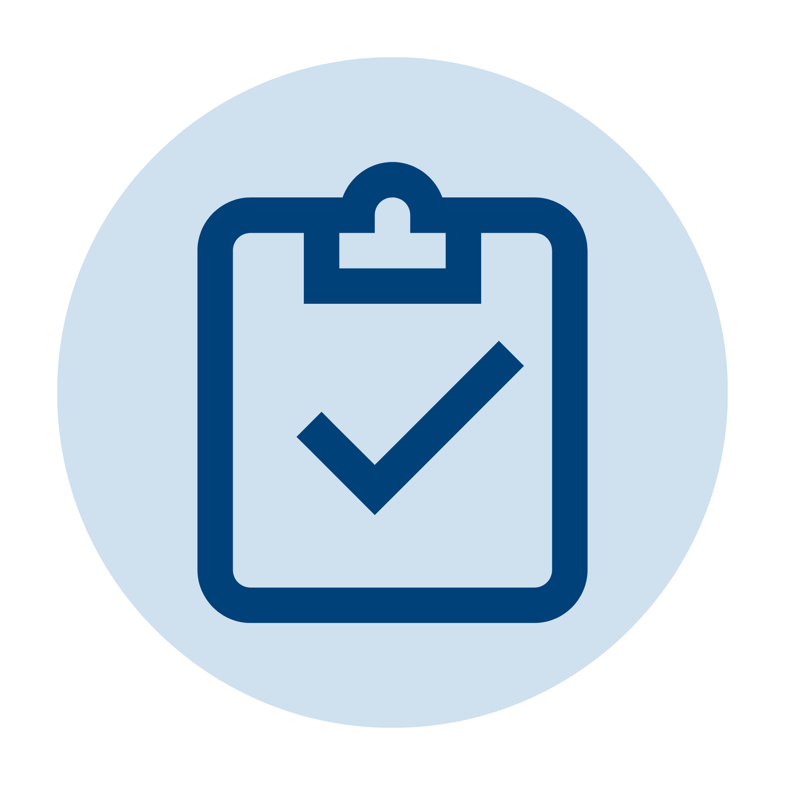

01
Map
Review the course syllabus, define Course Outcomes, and connect activities and assessments to the appropriate COs and Student Outcomes.
Academic Assessment & Grading System
EduMetrics Workflow
EduMetrics connects the major steps of academic assessment into one traceable workflow. Each stage builds the evidence needed for the next review, measurement, and improvement decision.

AssessA connected sequence from approved curriculum information to evidence-based improvement.
Review the course syllabus, define Course Outcomes, and connect activities and assessments to the appropriate COs and Student Outcomes.
Create assessment evidence and enter raw scores for each student. Faculty retain control of their assigned course and section records.
Use mapped assessment results to calculate CO attainment, compare performance with the target, and identify current class weaknesses.
Use below-target outcomes as evidence for CQI analysis, document improvement actions, and monitor the response to those actions.
EduMetrics separates responsibilities while keeping the evidence connected.
Every stage leaves a clear record that supports academic review and decision-making.
Activities and assessments remain connected to their mapped Course Outcomes.
CO performance can be reviewed against configured targets and flagged when improvement is needed.
Below-target outcomes provide a documented starting point for analysis and improvement planning.
Faculty, Department Heads, Students, and Administrators receive views appropriate to their responsibilities.